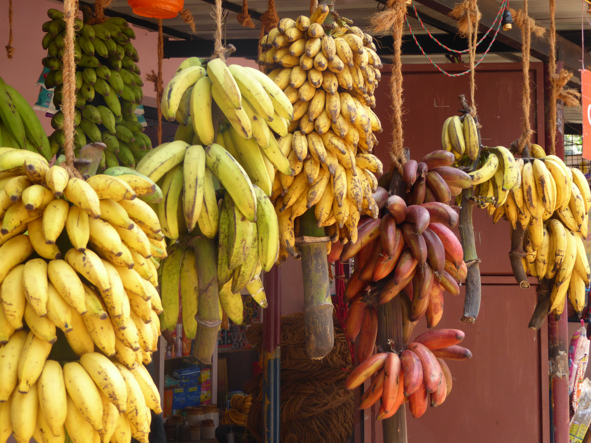

바나나는 3~10미터 정도의 높이까지 자라며 여러해살이풀로 분류된다. 씨(종자)는 짙은 갈색을 띠고 있으며 둥글고 5 밀리미터 정도 된다. 원기둥 모양의 헛줄기를 가지고 있다. 재배되는 바나나 품종은 수백 가지에 달한다. 중요한 상업용 품종으로는 마르티니크, 자메이카, 벨리즈, 그리고 바라코이라고도 하는 붉은 바나나가 있다. 플랜틴이라고 하는 큰 바나나 종류는 단단하고 녹말 성분이 많아 보통 조리용 채소로 먹는다. 서아프리카 및 중앙아프리카, 중앙 아메리카 등지에서 플랜틴은 주식으로 자리잡혀 있다.

| 구분 | 함량 | 단위 | RDA% |
| 칼슘 | 6.0 | mg | 0.9 |